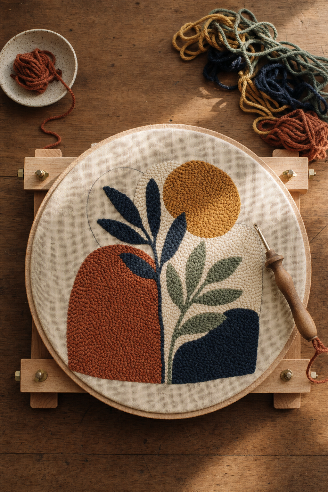
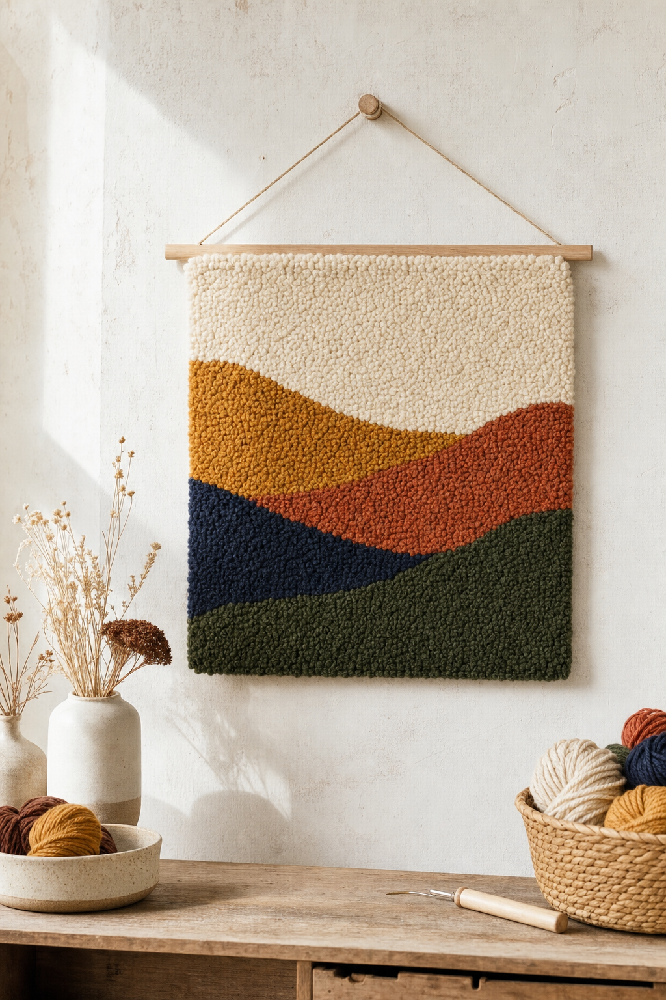

Foundations
The physics of a punched loop, the two families of punch needle, and why fabric tension is the single most important variable on the table.
A self-directed course in punch needle rug making — from the first drum-tight square of monks cloth to sculpted, carved pile. Six modules, four progressive projects, and every fix for every loop that won't stay put.

Punch needle looks simple in a two-minute reel and turns out to have a dozen quiet variables — fabric weave, needle style, yarn weight, tension, pile height, direction of the open channel. This course maps all of them, in the order they actually matter.
The physics of a punched loop, the two families of punch needle, and why fabric tension is the single most important variable on the table.
Choosing your first punch needle, matching yarn to fabric to needle, and the smallest possible starter kit that still lets you finish real work.
Framing monks cloth drum-tight, mirroring your design (because you punch from the back), and four ways to transfer a pattern.
The grip. The angle. Anchor stitches. Row spacing. Directional turns. Every mechanic that separates loops that stay from loops that don't.
Using an adjustable needle to vary pile height, then carving with appliqué scissors to build dimensional relief. Where craft becomes sculpture.
Tail management, latex-free binding, hemming the raw monks cloth, steam-blocking, and mounting a piece so it survives real floors and real feet.
"You are not drawing on the fabric — you are pushing a folded end of yarn through it, and the fabric is what holds every loop in place. Understand that one sentence and everything else follows."The premise of Module 01
You'll punch four projects across this course. Each introduces exactly one new variable — a new pile height, a color change, a curve, a sculpted section — so that when a loop pulls out or a corner turns muddy, you know which variable to isolate.
Start with a mug-rug coaster the size of a coffee saucer. Finish with a sculpted wall hanging that reads as a small textile relief.


Traditional punch needle produces uniform loop pile — plush, warm, forgiving. Once your hand is steady, an adjustable needle lets you vary pile height across a single piece, and appliqué scissors let you carve those heights into relief.
This is where a rug stops being a flat decorated surface and starts being a small textile object with real light and shadow. Module 05 walks the whole path — from setting an adjustable needle to trimming with confidence.
Same loop, same idea, radically different tempo. If you're coming from an AK-I tufting gun, there's a short chapter explaining exactly which of your tufting habits transfer, which ones actively hurt punch needle work, and when to reach for which tool.